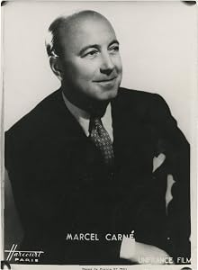

01 / 04
Les réalisateurs comme lentilles
Quatre cinéastes qui ont changé la manière de regarder les histoires françaises : du réalisme poétique au regard contemporain.
Ouvrir les dossiersUne courte histoire d’un long regard
Un magazine pour comprendre les réalisateurs, les mouvements et les idées qui ont fait de la France un laboratoire du cinéma.
Commence par un visage. Suis un mouvement. Repar(t)s avec une autre idée de ce qu’un film peut faire.
L’index
Le cinéma français n’est pas un style. C’est une conversation entre la rue et le studio, la théorie et l’instinct, la mémoire et le prochain plan.
Quatre cinéastes qui ont changé la manière de regarder les histoires françaises : du réalisme poétique au regard contemporain.
Ouvrir les dossiersImpressionnisme, réalisme poétique, Nouvelle Vague et cinéma du réel : les idées derrière les images.
Lire les mouvementsUne sélection de films influents, choisis pour leur forme et leur héritage, pas pour une popularité invérifiable.
Parcourir la sélectionDes réalisatrices et réalisateurs continuent d’élargir le cadre autour de l’identité, de la mémoire et de l’appartenance.
Rencontrer les voix actuellesLes visages du numéro
Les images des personnes citées dans ce dossier ne sont pas décoratives : elles rappellent que chaque mouvement est aussi une trajectoire humaine.

« Une image ne montre jamais seulement ce qui est devant la caméra. »— une question à garder devant chaque film
Salle de lecture
Ce projet privilégie les œuvres influentes et documentées plutôt que des classements de films « les plus vus » impossibles à vérifier ici.
Des dossiers d’histoire du cinéma et de réalisateurs publiés par le British Film Institute.
Visiter la BFILe Centre national du cinéma documente l’écosystème et l’histoire du cinéma en France.
Visiter le CNCUn lieu de conservation, d’exposition et de programmation qui maintient la mémoire du cinéma vivante.
Visiter l’archive